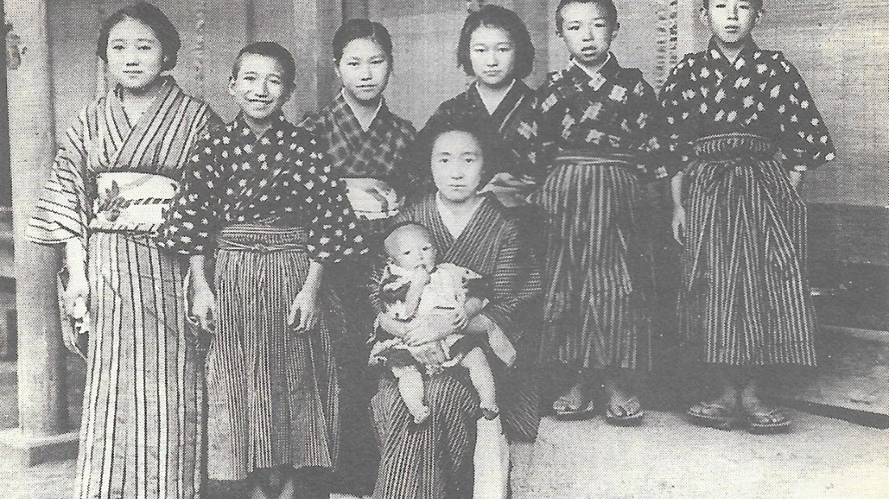

"No Longer Human" is a poignant and thought-provoking novel written by the renowned Japanese author, Osamu Dazai. The novel was first published in 1948 and since then, it has become a literary classic, widely regarded as one of the most insightful and powerful explorations of the human psyche and the struggle to find meaning and purpose in life. Osamu Dazai was a Japanese author who lived from 1909-1948. He was born in Kanagi, Japan and grew up in a wealthy family. Despite his privileged upbringing, Dazai struggled with depression and alcoholism throughout his life, which is reflected in much of his writing. He is widely considered to be one of the most important figures in Japanese literature, and his works have been translated into numerous languages and continue to be widely read and studied today. "No Longer Human" is structured as a series of diary entries, with the protagonist, Yozo Oba, reflecting on different periods in his life and the events that shaped him. This structure allows for a deep dive into Yozo's inner thoughts and emotions, painting a picture of a deeply troubled individual who feels lost and alone.
The pacing of the novel is slow and contemplative, reflecting the protagonist's introspective nature. This slow pace allows for a detailed exploration of Yozo's character and the events of his life, as well as a deeper understanding of the themes of the novel. One of the key themes of "No Longer Human" is the search for identity. Yozo struggles with a sense of not fitting in and feeling like an outsider, which is a feeling that many readers can relate to. Through his diary entries, the reader is able to see the ways in which Yozo tries to understand himself and find his place in the world, often with tragic results. Another theme of the novel is the impact of societal expectations on individuals. Throughout the story, Yozo is constantly trying to conform to societal norms and expectations, even when they do not align with his true self. This struggle to fit in ultimately leads to his depression and sense of disconnection from the world. The overall message of "No Longer Human" is a poignant commentary on the human condition. The novel shows the reader the importance of self-discovery and the dangers of conforming to societal expectations, as well as the devastating impact that depression and loneliness can have on individuals. It is a powerful exploration of the human psyche and the struggle to find meaning and purpose in life. In conclusion, "No Longer Human" is a poignant and thought-provoking novel that explores the themes of identity, societal expectations, and the human condition. With its slow pacing and introspective structure, the novel provides a deep dive into the protagonist's thoughts and emotions, painting a vivid picture of a deeply troubled individual struggling to find his place in the world. This novel is a testament to Osamu Dazai's literary genius and his ability to explore complex themes with sensitivity and insight. If you are looking for a novel that will challenge your perspective and touch your soul, then "No Longer Human" is a must-read.I strongly recommend that you read "No Longer Human" by Osamu Dazai. Personally, I have a newfound interest in Japanese literature and have set my sights on "The Book of Five Rings" Miyamoto Musashi and "I Am a Cat"by Natsume Sōseki.

Some of my favourite quotes:
“What, I wondered, did he mean by “society”? The plural of human beings? Where was the substance of this thing called “society”? I had spent my whole life thinkng that society must certainly be something powerful, harsh and severe, but to hear Horiki talk made the words “Don’t you mean yourself?” come to the tip of my tongue. But I held the words back, reluctant to anger him. ‘Society won’t stand for it.’ ‘It’s not society. You’re the one who won’t stand for it - right?’ ‘If you do such a thing society will make you suffer for it’ ‘It’s not society. It’s you, isn’t it?’ ‘Before you know it, you’ll be ostracized by society.’ ‘It’s not society. You’re going to do the ostracizing, aren’t you?’ Words, words of every kind went flitting through my head. “Know thy particular fearsomeness, thy knavery, cunning and witchcraft!” What I said, however, as I wiped the perspiration from my face with a handkerchief was merely, “You’ve put me in a cold sweat!” I smiled. From then on, however, I came to hold, almost as a philosophical conviction, the belief: What is society but an individual?”
“They say that love flies out the window when poverty comes in the door, but people generally get the sense backwards.”
"Now I have neither happiness nor unhappiness. Everything passes. This is the one and only thing I have thought resembled a truth in society of human beings where I have dwelled up to now as in a burning hell. Everything passes. This year I am twenty-seven. My hair has become much greyer. Most people would take me for over forty."
I strongly recommend that you read "No Longer Human" by Osamu Dazai,it revitalised my enjoynment for reading. Personally, I have a newfound interest in Japanese literature and have set my sights on "The Book of Five Rings" by Miyamoto Musashi and "I Am a Cat" by Natsume Sōseki.